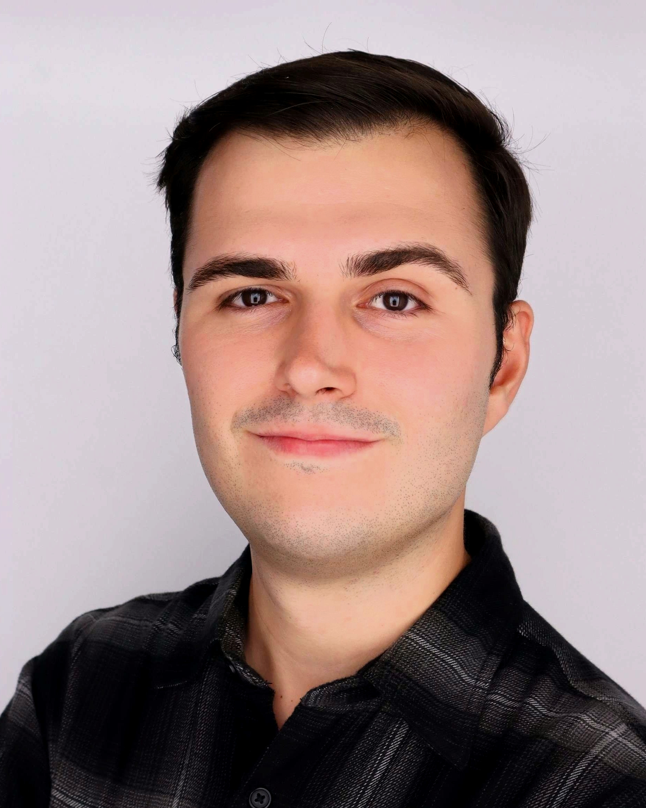

Alberto Pavia
I am a PhD candidate in economics at KU Leuven in Belgium. My advisor is Christian Proebsting.
During the academic year 2025–2026, I am visiting the Department of Economics at UC Berkeley, hosted by Jón Steinsson, supported by a Fulbright Schuman grant.
My research focuses on macroeconomics, where I study how shocks propagate across regions within a country or among countries in a monetary union. I combine granular microdata to analyze the local effects of aggregate shocks with structural models to study their implications for aggregate and distributional outcomes.
My research is funded by the Research Foundation Flanders (FWO) fundamental research grant. I grew up in La Rioja, in Northern Spain.
If you have any comments, thoughts, or simply want to talk about research, feel free to reach out!
Research
Working Papers
-
Award Best paper prize — RES PhD Conference 2024
Abstract
The United States is a currency union where multiple risk-sharing mechanisms — migration, fiscal transfers, income diversification and credit markets — buffer consumption from local income fluctuations. We show that risk sharing not only directly smooths consumption but also indirectly stabilizes income by dampening the local multiplier. Combining causal estimates from regional military buildups with a multi-region quantitative model, we find that current levels of risk-sharing cut state-level consumption volatility by a factor of four. Crucially, the indirect stabilization of income accounts for nearly half of this effect, implying substantially larger benefits from integration than conventional measures suggest.
Work in Progress
-
Capital Adjustment and Regional Fiscal Multipliers
-
Distributional Effects of Military Spending
Presentations (including scheduled) +
Curriculum Vitae
Please click here to read my full curriculum vitae.